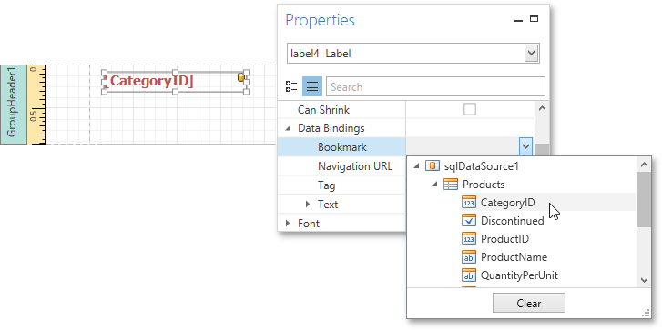
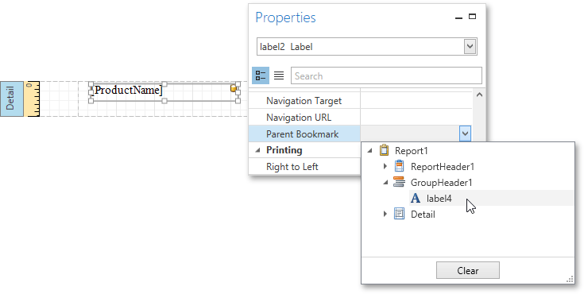

Add Bookmarks
This tutorial describes the steps to create a report with bookmarks (a so-called Document Map). This feature allows you to easily navigate through the report during print preview.
To demonstrate the Document Map feature, use a report with grouping, similar to the one created in the following tutorial: Grouping Data.
To create a report with bookmarks, do the following.
Select the label placed in the Group Header band, and in the Properties Panel, expand the Data Bindings property. As this control is bound to data, bind its Bookmark property to the same data field (in this example, CategoryID).

Note that as with other bindable properties, you can also apply value formatting to the Bookmark property (e.g., Category: {0}).
In the same way, select the label in the Detail band and set its Bookmark property to the ProductName data field.

Then, for the same label, set the Parent Bookmark property to the Group Header's label to define the Document Map's hierarchy.

Finally, select the report itself and assign text to its Bookmark property, which determines the caption of the root node of the Document Map.

The report with bookmarks is now ready. Switch to the Print Preview tab and use the Document Map Panel to navigate through the report.